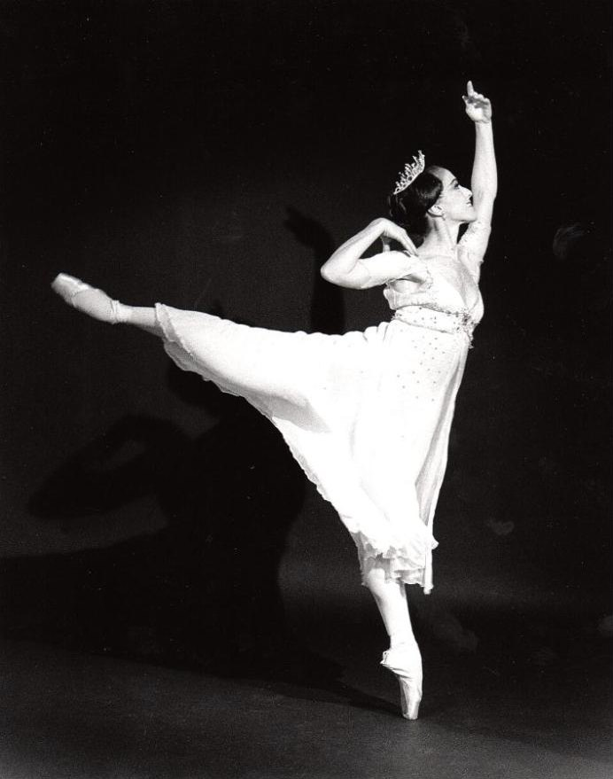

Мир балета
Балет — это искусство, объединяющее музыку, танец, театр и сценическое оформление. Без единого слова артисты рассказывают историю: о любви, предательстве, сказке и мечте. Всё, что зритель понимает, передаётся движением, жестом и музыкой.
На этом сайте можно познакомиться с историей балета, знаменитыми спектаклями и великими балеринами, узнать, как устроены балетная сцена и костюм, и найти официальные сайты крупнейших театров мира.

Что такое балет
Слово «балет» происходит от итальянского balletto — «танцую». Родиной балета считается Италия эпохи Возрождения, где при дворах устраивали пышные представления с танцами. Позже балет пришёл во Францию, а затем в Россию, где в XIX–XX веках русская балетная школа стала одной из лучших в мире.
Классический балет строится на строгой системе движений: пять позиций ног, позиции рук, прыжки, вращения и танец на пальцах — на пуантах. Этой системе артисты учатся с детства, около восьми лет.
Разделы сайта
- История балета — от придворных праздников до современной хореографии;
- Знаменитые балеты — таблица самых известных спектаклей;
- Великие балерины — Павлова, Уланова, Плисецкая, Ваганова;
- Балетный костюм — пачка, пуанты, купальник, трико;
- Музыка в балете — композиторы и их балеты;
- Знаменитые театры — со ссылками на официальные сайты;
- Карта сцены — интерактивная схема балетной сцены;
- Галерея — иллюстрации, которые можно скачать.
Скачать и написать
Вы можете скачать текстовый вариант сайта в формате Word (.docx) или простого текста (.txt). Если вы захотите поделиться своими мыслями о нашем сайте, пришлите письмо по электронной почте: vtoporova-25@ranepa.ru.